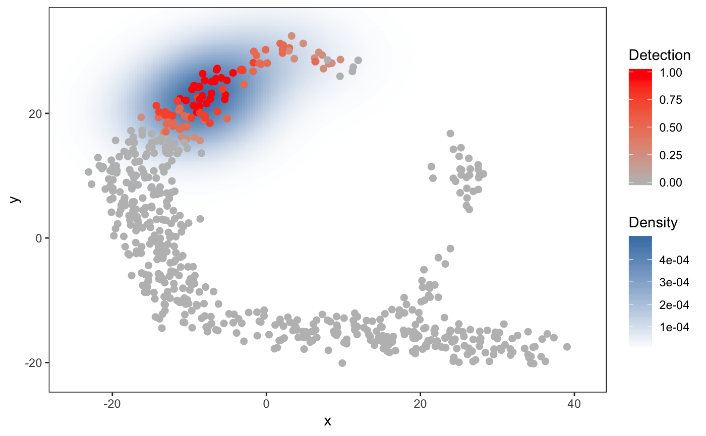

singleCellHaystack is a package for finding surprising needles (=genes) in haystacks (=single cell transcriptome data). Single-cell RNA-seq (scRNA-seq) data is often converted to fewer dimensions using Principal Component Analysis (PCA) and represented in 2-dimentional plots (e.g. t-SNE or UMAP plots). singleCellHaystack can be used for finding genes that are expressed in subsets of cells that are non-randomly distributed in these multi-dimensional spaces or 2D representations.
Our manuscript about singleCellHaystack is now availabe on bioRxiv.
Example usage
A small toy dataset is included in the package. The toy dataset includes:
dat.expression: scRNA-seq expression of genes (rows) in cells (columns)dat.tsne: a 2D representation of the cell in dat.expression
First, apply haystack (the main function of the package) on the toy dataset.
library(singleCellHaystack)
set.seed(1234)
# Turn the expression data into detection (gene detected = TRUE, not detected = FALSE)
dat.detection <- dat.expression > 1
# run the main 'haystack' analysis
res <- haystack(dat.tsne, detection=dat.detection, method = "2D")
#> ### calling haystack_2D()...
#> ### setting parameters...
#> ### calculating Kullback-Leibler divergences...
#> ### starting randomizations...
#> ### ... 10 values out of 58 done
#> ### ... 20 values out of 58 done
#> ### ... 30 values out of 58 done
#> ### ... 40 values out of 58 done
#> ### ... 50 values out of 58 done
#> ### estimating p-values...
#> ### returning result...
# the returned results 'res' is of class 'haystack'
class(res)
#> [1] "haystack"Let’s have a look at the “most surprising” genes.
# show top 10 "surprising" genes
show_result_haystack(res.haystack = res, n=10)
#> D_KL log.p.vals T.counts
#> gene_242 1.360661 -21.57548 96
#> gene_275 1.345251 -20.97236 95
#> gene_317 1.386194 -20.94379 94
#> gene_497 1.599646 -20.46697 86
#> gene_79 1.929800 -20.43333 68
#> gene_244 1.238011 -19.91416 95
#> gene_351 1.408946 -19.57361 89
#> gene_339 1.414814 -19.17568 87
#> gene_62 1.519993 -19.06512 81
#> gene_137 1.349994 -19.05803 89
# alternatively: use a p-value threshold
#show_result_haystack(res.haystack = res, p.value.threshold = 1e-10)One of the most non-random genes is “gene_497”. Here we visualize it’s expression in the t-SNE plot.
# visualize one of the surprizing genes
plot_gene_haystack(dat.tsne, expression=dat.expression,
gene="gene_497", detection = dat.detection, high.resolution = TRUE, point.size=2) Yes, the pattern of cells in the toy example roughly resembles a haystack; see the Haystack paintings by Monet.
Yes, the pattern of cells in the toy example roughly resembles a haystack; see the Haystack paintings by Monet.
You are not limited to single genes. Here, we pick up a set of non-random genes, and group them by their expression pattern in the plot into 5 clusters.
# get the top most significant genes, and cluster them by their distribution pattern in the 2D plot
sorted.table <- show_result_haystack(res.haystack = res, p.value.threshold = 1e-10)
gene.subset <- row.names(sorted.table)
# k-means clustering
km <- kmeans_haystack(x=dat.tsne, detection=dat.detection, genes=gene.subset, k=5)
km.clusters <- km$cluster
# alternatively: hierarchical clustering
#hc <- hclust_haystack(x=dat.tsne$tSNE1, y=dat.tsne$tSNE2, detection=dat.detection, genes=gene.subset)
#hc.clusters <- cutree(hc,k = 5)… and visualize the average pattern of the genes in cluster 1 (for example).
# visualize cluster distributions
plot_gene_set_haystack(x=dat.tsne, detection=dat.detection,
genes=names(km.clusters[km.clusters==1]), point.size=2)